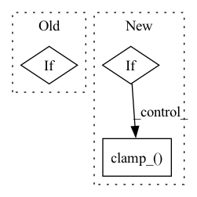

Pattern ID :2382
Before Change
X, self.scale, self.zero_point,
self.quant_min, self.quant_max, grad_factor)
else:
if self.qscheme == torch.per_channel_symmetric or \
self.qscheme == torch.per_channel_affine:
X = torch.fake_quantize_per_channel_affine(
X, self.scale, self.zero_point, self.ch_axis,After Change
return scale, zero_point
def forward(self, X):
if self.static_enabled[0] == 1:
self.activation_post_process(X.detach())
_scale, _zero_point = self.activation_post_process.calculate_qparams()
_scale = _scale.to(self.scale.device)
_zero_point = _zero_point.to(self.zero_point.device)
self.scale.data.copy_(_scale)
self.zero_point.data.copy_(_zero_point)
else:
self.scale.data.clamp_(min=self.eps.item())
if self.fake_quant_enabled[0] == 1:
if self.qscheme in (torch.per_channel_symmetric, torch.per_tensor_symmetric):
self.zero_point.data.zero_()In pattern: SUPERPATTERN
Frequency: 3
Non-data size: 3
Instances Fragment ID: 10025362
Project Name: pytorch/pytorch
Commit Name: 0c60922fb0614132433779ad45ab8f30783db2ae
Time: 2021-02-03
Author: haichuan@fb.com
File Name: torch/quantization/_learnable_fake_quantize.py
M Class Name: _LearnableFakeQuantize
N Class Name: _LearnableFakeQuantize
M Method Name: forward(2)
N Method Name: forward(2)
M Parent Class: torch.quantization.FakeQuantizeBase
N Parent Class: nn.Module
M File Name: torch/quantization/_learnable_fake_quantize.py
N File Name: torch/quantization/_learnable_fake_quantize.py
M Start Line: 302
M End Line: 337
N Start Line: 127
N End Line: 155
Before Change
// p2 loss reweighting
if p2_loss_weight_gamma > 0:
loss_weight = (self.p2_loss_weight_k + log_snr.exp()) ** -p2_loss_weight_gamma
losses = losses * loss_weight
After Change
snr = log_snr.exp()
maybe_clipped_snr = snr.clone()
if exists(min_snr_gamma):
maybe_clipped_snr.clamp_(min = min_snr_gamma)
if pred_objective == "noise":
loss_weight = maybe_clipped_snr / snr
elif pred_objective == "x_start": Fragment ID: 10025364
Project Name: lucidrains/imagen-pytorch
Commit Name: 7a21a3071a2026be0417079c212568f47fea6e01
Time: 2023-03-18
Author: lucidrains@gmail.com
File Name: imagen_pytorch/imagen_pytorch.py
M Class Name: Imagen
N Class Name: Imagen
M Method Name: p_losses(4)
N Method Name: p_losses(4)
M Parent Class: nn.Module
N Parent Class: nn.Module
M File Name: imagen_pytorch/imagen_pytorch.py
N File Name: imagen_pytorch/imagen_pytorch.py
M Start Line: 2605
M End Line: 2609
N Start Line: 2606
N End Line: 2619
Before Change
entropy_bonus = log_alpha.exp() * (probs * log_probs).sum(1, keepdim=True)
else:
a = a_dist.rsample()
if random_process is not None:
a = random_process.sample(a, update_schedule=False)
if not use_baseline:
vals = critic(s_rep, a)After Change
// sample an action
a = a_dist.rsample()
// compute max ent term, if applicable
if random_process is not None:
a = random_process.sample(a, update_schedule=False)
entropy_bonus = 0.0
else:
entropy_bonus = log_alpha.exp() * a_dist.log_prob(a).sum(-1, keepdim=True)
entropy_bonus.clamp_( -1e4, 1e4)
// get critic values for this action
if not use_baseline:
vals = critic(s_rep, a)
if popart and pop: Fragment ID: 10025366
Project Name: jakegrigsby/super_sac
Commit Name: 2d57bda6e85cc317dd49d7ffa3dbabedba49a3e1
Time: 2021-10-24
Author: jcg6dn@virginia.edu
File Name: super_sac/learning.py
M Class Name: AnonimousClass
N Class Name: AnonimousClass
M Method Name: online_actor_update(13)
N Method Name: online_actor_update(13)
M Parent Class:
N Parent Class:
M File Name: super_sac/learning.py
N File Name: super_sac/learning.py
M Start Line: 260
M End Line: 302
N Start Line: 292
N End Line: 317